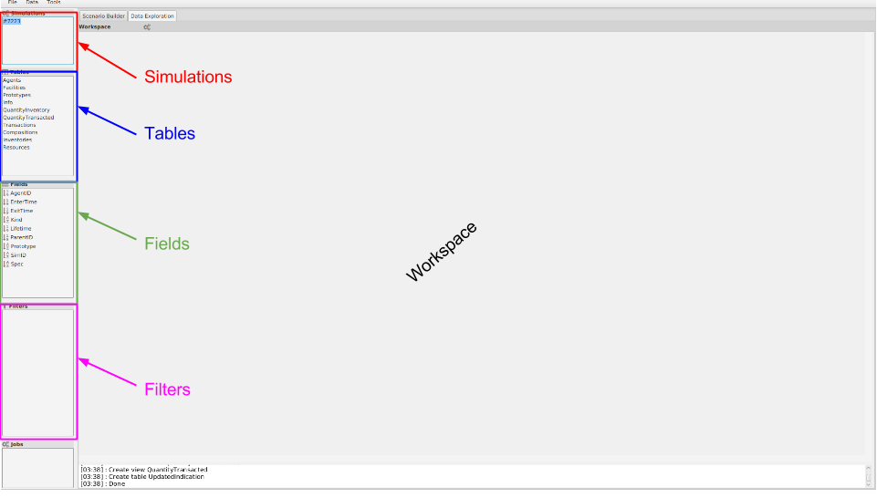

An Introduction to Data Exploration¶
The “Data Exploration” tab in Cyclist provides a way to fluidly explore the data that arises from a Cyclus simulation. A variety of views can be manipulated in a straightforward and interactive way to develop a thorough understanding of the features that matter the most.
- Simulations: A user can load multiple simulations and easily work with multiple simulations, either switching between them or viewing them side-by-side.
- Tables: This highlights the most important output tables, both those that are the raw outpu of Cyclus and some derived tables. A user can draw data from these tables into the different views to create a visual story from the data.
- Fields: These represent the columns of data in each table and can be used for a variety of roles in the views:
- define which data will be plotted on axes
- aggregate and group data together according to the fields
- filter or select subsets of data
- Filters: TBD!!
Activity: Examine Your First Data Exploration Session¶
- Click on the “QuantityInventory” table to selecct it.
- Right-click on the “QuantityInventory” table and select “Plot”

- Select a “Time” as the x-axis by dragging it from the “Fields” pane and dropping it in X-axis entry-box.
- Do the same for “Quantity” on the y-axis.

This shows a plot of the total inventory in the system as a function of time.
- Drag the “Protoype” field into the “Group by” entry to see the results split up by the prototype that contained that inventory.

- Use the “Axis” menu at the top right of the plot to adjust the y-axis to be logarithmic.
- Add “NucID” as an addition “Group by” field to see the total mass of each nuclide that was resident in each type of facility in the system as a function of time.

This image is becoming somewhat busy, so we can add some filters.
- Drop the “Prototype” field to the middle of the title bar for the plot. A new control panel opens on the right to control the filters. Select only the enrichment plant (EnrichPlant) and the repository (NuclearUnderground).

- We can combine this with another filter: drop the “NucID” field in the title bar next to the “Prototype” filter. Select all the facilities protypes only “U235” and “Pu239” to examine the inventory of fissile material in diferent facilities throughout the system.

- Notice the fluctations at the beginning! Let’s zoom in a little by adding the “Time” field as yet another filter. Notice how it appears as a slider bar with entries for a time window. Use the sliders, or the text entry to choose a window between time steps 0 and 60 (the first 5 years).

Some observations:
- The enrichment plant began enriching in the first time step and was then able to provide enough fuel for a full core loading in the second time step. At that time we see the inventory of both U-235 and U-238 drop.
- The enerichment plant’s inventory then oscillates as it build up enough material for an additional reactor to come online. Once all reactors have full core loadings (100 tonnes each), the total reactor inventory reaches eqilibirum.
- After 1 full core loading cycle (12 time steps), the first material appears at the repository as spent fuel and begins accumulating.
- Finally, remove “Time” from the x-axis and move “Protoype” from the Group By to the x-axis, select all the nuclides in the filter, and expand the time filter to include the whole simulation. This has quickly become a bar chart showing the relative nuc8lide amounts in each facility type.